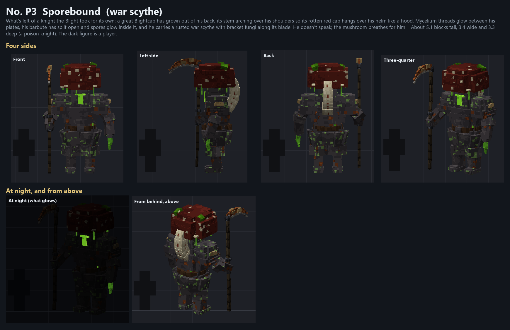
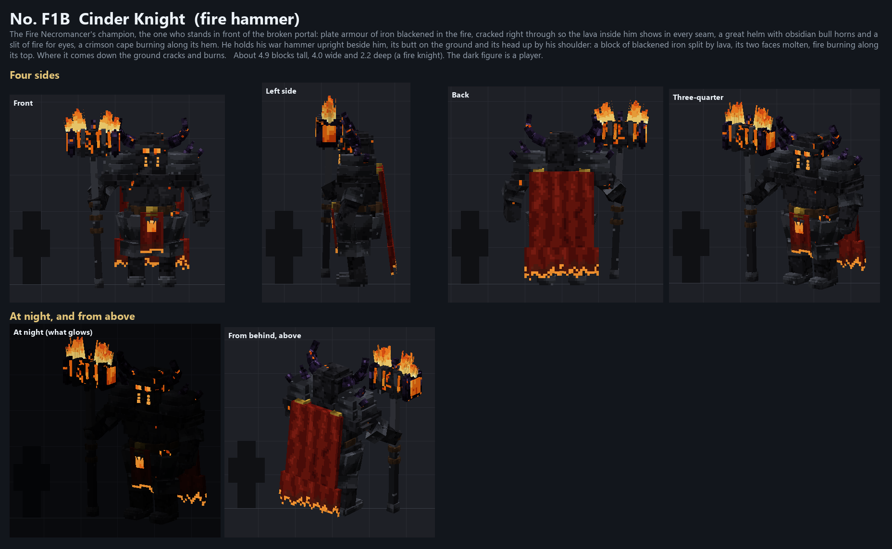
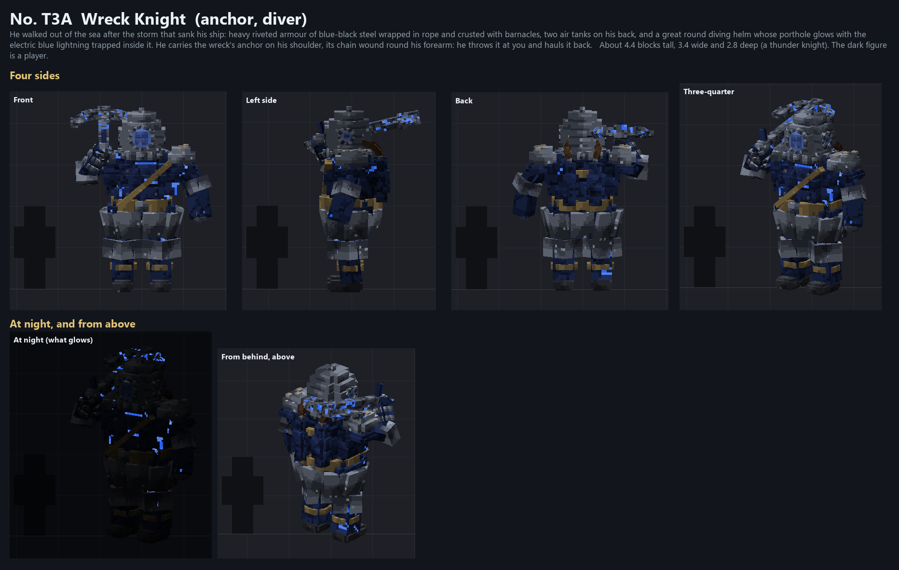
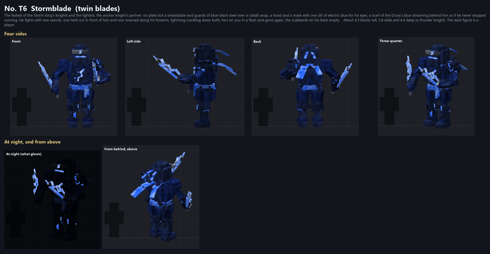
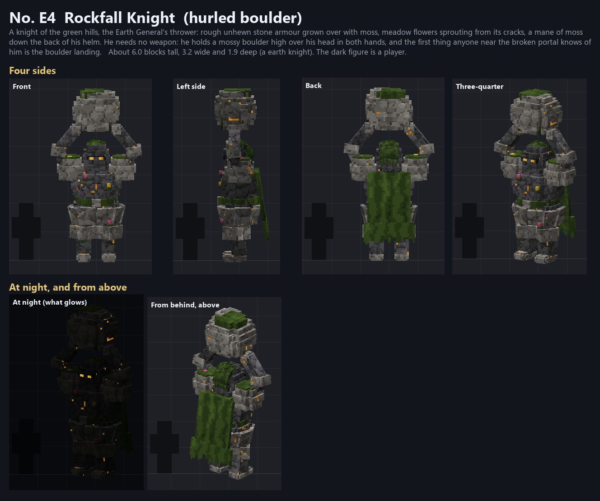

Two knights of each element will guard a broken portal in that element's biomes in the Overworld (the user's plan). The user's pairs: ice's Thawed Soldiers (9C and 9D, the Rimefall gallery, as tall as the knights), poison's P1 and P3, fire's F1B and F5, thunder's T3A and T6, earth's E3 and E4. Rounds 1-3 are archived in round1/ to round3/. The statues here; the real knights, their moves and their ruins: their spawn eggs and /dross showcase knight_ruins. In the game: /dross showcase knights.
The user's pair (November 7, 2026): P1 Blight Warden and P3 Sporebound, in Sir Mildew's style (P2 Plague Herald archived in round1/).
Sir Mildew's sworn brother, who took up the staff when his sword rusted away: the same plate armour furred with mould, a tall pointed helm with a curtain of rotten mail and Blightcaps sprouting from its sides, a cape eaten to rags. His staff of black, twisted wood is crowned with an iron cage round a glass globe of glowing poison that drips and hisses; his left hand drips with it too. He's the one who poisons the ground round the broken portal.

What's left of a knight the Blight took for its own: a great Blightcap has grown out of his back, its stem arching over his shoulders so its rotten red cap hangs over his helm like a hood. Mycelium threads glow between his plates, his barbute has split open and spores glow inside it, and he carries a rusted war scythe with bracket fungi along its blade. He doesn't speak; the mushroom breathes for him.

The user's pair (November 2026: 'f1b and f5 are the best'): F1B Cinder Knight with his fire hammer and F5 Flamehand, who fights with fire hands (F1A's greataxe archived in round3/, F1C's twin blades went to the thunder ninja, round 2's flail in round2/, F2-F4 in round1/).
The Fire Necromancer's champion, the one who stands in front of the broken portal: plate armour of iron blackened in the fire, cracked right through so the lava inside him shows in every seam, a great helm with obsidian bull horns and a slit of fire for eyes, a crimson cape burning along its hem. He holds his war hammer upright beside him, its butt on the ground and its head up by his shoulder: a block of blackened iron split by lava, its two faces molten, fire burning along its top. Where it comes down the ground cracks and burns.

The Cinder Knight's partner, who carries no weapon at all (the user, November 7, 2026: "one just with fire hands"): his gauntlets burned away long ago and his forearms are molten lava from the elbow down, his fists wrapped in fire. Blackened plate on the rest of him, a crimson sash, and a helm open at the top like a brazier, the fire inside burning up out of it. He fights with his fists raised, one guarding, one ready to throw, and every punch leaves fire on the ground.

The user's pair (November 9, 2026), in the Dross's electric blue: T3A Wreck Knight ('T3A is the best'; he'll throw his anchor on its chain and pull it back) and T6 Stormblade, 'like a speed ninja with lightning attacks', with F1C's twin blades (T1, T2, T3B, T3C, T4 and T5 archived in round2/).
He walked out of the sea after the storm that sank his ship: heavy riveted armour of blue-black steel wrapped in rope and crusted with barnacles, two air tanks on his back, and a great round diving helm whose porthole glows with the electric blue lightning trapped inside it. He carries the wreck's anchor on his shoulder, its chain wound round his forearm: he throws it at you and hauls it back.

The fastest of the Storm King's knights and the lightest, the anchor knight's partner: no plate but a breastplate and guards of blue-black steel over a cobalt wrap, a hood and a mask with one slit of electric blue for his eyes, a scarf of the Dross's blue streaming behind him as if he never stopped running. He fights with two swords, one held out in front of him and one reversed along his forearm, lightning crackling down both: he's on you in a flash and gone again, the scabbards on his back empty.

The user's pair (November 7, 2026): E3 Geode Knight and E4 Rockfall Knight (E1 Graven Knight and E2 Crag Bulwark archived in round1/).
A miner of the deep roots who dug too far and came back up changed: amethyst has grown right through his dark armour, clusters of glowing crystal breaking out of his shoulders, back and helm like a geode cracked open. He carries a war pick over his shoulder, its iron head tipped with a spike of amethyst, and the crystals on him ring when he swings it.

A knight of the green hills, the Earth General's thrower: rough unhewn stone armour grown over with moss, meadow flowers sprouting from its cracks, a mane of moss down the back of his helm. He needs no weapon: he holds a mossy boulder high over his head in both hands, and the first thing anyone near the broken portal knows of him is the boulder landing.
